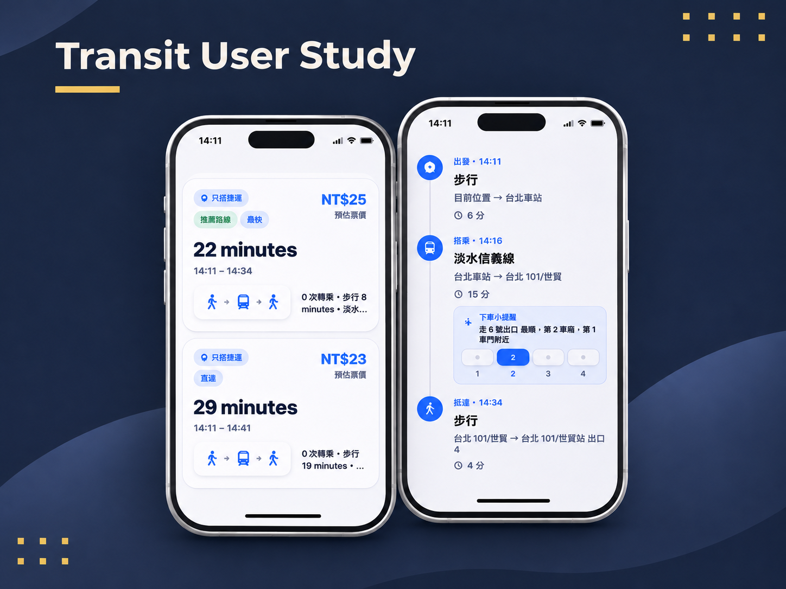
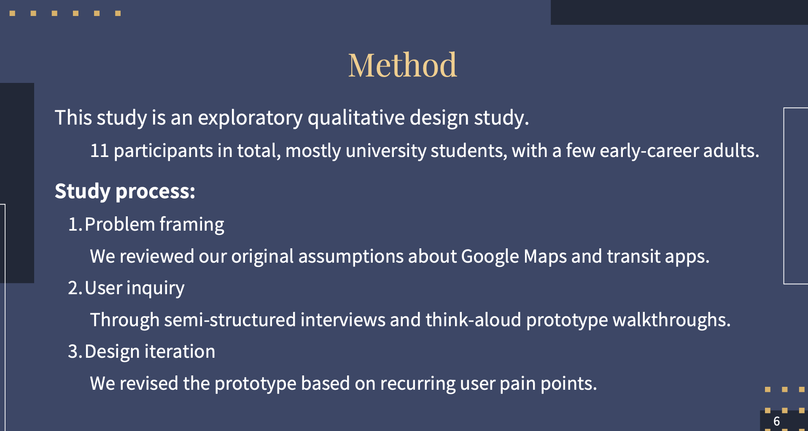

P04 / User Research & Interaction Design
Multimodal Transit Planning — HCI Research
Investigated how people compare transit routes, interpret transfer instructions, and choose transportation options through user interviews, think-aloud testing, and interface prototyping. I contributed to user research, analysis, and design recommendations, helping the team translate observed usability issues into more intuitive transit-planning interactions.

Transit User Research | Route Planning & Transfer Interface Prototype
01
Research Background
Existing transit-planning applications offer numerous route options, but providing more information does not necessarily make decisions easier. For travelers navigating multiple transportation modes, factors such as walking distance, transfer complexity, weather, and personal preferences can be just as important as travel time and cost.
Our initial goal was to create a more convenient transit-planning tool. As the research progressed, however, we recognized that the central challenge was not simply route discovery, but how users interpret, compare, and act on transit information.
We therefore shifted our focus toward information presentation and interaction design in multimodal transit planning, exploring ways to make route comparisons, transfer instructions, and transportation choices more intuitive.
02
My Contributions
I contributed to user interviews, prototype testing, and qualitative research analysis, helping the team understand how people plan transit journeys, what information they prioritize, and where they encounter usability difficulties.
The study involved semi-structured interviews and think-aloud testing, using participants' verbal feedback and observed interactions to identify issues in route comparison, transfer guidance, and interface navigation. The research involved 11 participants across the team.
I also participated in synthesizing research findings through thematic analysis, organizing user feedback into recurring usability issues and contributing interface recommendations grounded in those observations.
In addition, I helped consolidate the research findings and delivered an oral presentation in English, communicating the study's methodology, key insights, and design recommendations.
03
Research Methods & Findings
The team conducted user interviews and prototype walkthroughs to observe how participants searched for destinations, compared alternative routes, and interpreted transfer instructions. Alongside self-reported feedback, we examined moments of hesitation, confusion, and additional information-seeking during task completion.
We used thematic analysis to organize interview responses and usability observations into recurring patterns.
First, route comparison was not always intuitive. Users needed to weigh travel time, fares, walking distance, and transfers, but fragmented or inconsistently presented information made those trade-offs harder to assess.
Second, transfer instructions sometimes lacked actionable detail. Participants wanted clearer transportation sequences, transfer locations, and walking guidance to understand what they needed to do next.
Third, preferences and frequently used functions were not always easy to access. Some participants wanted more convenient ways to revisit common routes or apply their travel preferences without repeatedly searching or switching between applications.
Together, these findings reinforced an important design principle: the goal is not simply to display more transit information, but to make that information easier to compare and understand.
04
Prototype Design & Iteration
Based on the research findings, the team developed and refined a transit-planning interface prototype, focusing on route comparison, transfer guidance, and clarity of interaction.
For route selection, the prototype uses route comparison cards to organize essential information, such as travel time, fares, and transfer sequences, making it easier to evaluate alternatives within a single view.
For transfer guidance, the prototype introduces timeline-based instructions and transportation-mode sequences, breaking the journey into more recognizable steps and helping users understand when to board, where to transfer, and what action comes next.
The design also incorporates concepts such as frequently used route shortcuts and concise route summaries, aiming to make repeated planning tasks more efficient and important information easier to access.
These iterations connected research observations with concrete interface design decisions, turning the prototype into a response to identified user needs rather than simply a demonstration of possible features.
05
Research Outcomes
The team completed an HCI study combining user interviews, usability testing, qualitative analysis, and interface prototyping. Deliverables included a research report, an interactive design prototype, and recommendations informed by the observed needs of transit users.
The research identified recurring difficulties related to route comparison, transfer comprehension, and interaction preferences. In response, the prototype explored route cards, timeline-based transfer guidance, and frequently used route features.
For me, the most valuable outcome was learning how to translate interviews and usability observations into evidence-informed product and interface recommendations, strengthening my ability to connect user research with practical design decisions.
The study was exploratory and involved 11 participants across the team. Its findings were used to inform prototype improvements rather than establish large-scale usability or real-world transit performance.
SELECTED EVIDENCE
User Research & Transit Interface Prototype

